1. Einleitung
Gestaltung findet heute zunehmend in digitalen, dynamischen Kontexten statt. Viele Entwurfsprozesse bewegen sich heute in Richtung von Systemen, die Variation, Automatisierung und flexible Anpassung ermöglichen. In der Schriftgestaltung hingegen ist der Entwurfsprozess bis heute überwiegend an das Zeichnen statischer Bézier-Konturen gebunden, die eher an analoge Schriftgestaltung erinnern. Zwar ermöglicht das OpenType-Format, mithilfe von Code und sogenannten OpenType-Features, erweiterte typografische Funktionen. Doch dies verändert nicht die grundlegende Logik des Entwerfens. Diese Arbeitsweise hat sich durchgesetzt, denn sie ist effizient und bequem, jedoch beeinflusst sie auch die ästhetischen Ergebnisse, indem sie bestimmte Formen und Gesten bevorzugt.1
Die Abhängigkeit von digitalen Zeichenwerkzeugen bleibt oft unhinterfragt. Software wird als bloßes Mittel zur
Umsetzung verstanden. Doch dass sie zugleich die Logik des Entwerfens vorgibt, bleibt meist unbeachtet. Der
Entwurfsprozess folgt damit einer etablierten Sprache, die wir nicht in Frage stellen. Dies führt auch dazu das
der gestalterische Spielraum in der Schriftgestaltung begrenzt ist. Diese Arbeit untersucht daher, wie sich
typografische Gestaltung verändert, wenn Schrift nicht gezeichnet, sondern programmiert wird, wenn moderne
Schriften als das verstanden werden, was sie letztendlich heutzutage sind: Digitale Strukturen und Software.
Daraus ergibt sich die Zentrale Forschungsfrage dieser Arbeit:
Wie verändert sich typografische Gestaltung, wenn sie auf parametrischen Prinzipien statt auf manuell gezeichneten Formen basiert – und welche Rolle können Open-Source-Tools dabei spielen?
Methodisch folgt die Arbeit einem forschend-gestalterischen Ansatz. Theorie und Praxis bilden dabei zwei sich ergänzende Ebenen. Eine theoretische Analyse historischer und aktueller parametrischer Systeme bildet den Rahmen und Bezugspunkte, während Experimente mit Metapost sowie die Weiterentwicklung eines Web-Tools den praktischen Kern der Untersuchung darstellen. Ziel ist es, durch diese Verbindung Erkenntnisse über die Potenziale parametrischer Schriftgestaltung zu gewinnen und zu reflektieren.
Aufbau der Arbeit:
Kapitel Zwei führt in die theoretischen Grundlagen und den Kontext von Schriftprogrammen ein. Kapitel Drei widmet
sich historischen Systemen aus der Schriftgestaltung. Kapitel Vier behandelt explizit die
Geschichte und Funktionsweise von Metafont. Kapitel Fünf geht auf den heutigen stand der Dinge ein. Kapitel Sechs
dokumentiert die experimentelle Praxis und das gestalterische Projekt, zum Schluss fasst Kapitel Sieben die
Erkenntnisse zusammen und Kapitel Acht gibt einen Ausblick.
2. Kontext Schriftprogramme
Die Art wie Schriften produziert und gestaltet wurden, hat sich auch wie in vielen anderen kreativen Bereichen, immer gemeinsam mit dem Technologischen Fortschritt verändert. Dieser Wandel fand im letzten 150 Jahren besonderst schnell statt. Im 19. Jahrhundert bestimmten noch teure Bleisatz-Maschinen von Monotype oder Linotype das Handwerk der Schriftgestaltung,2 ein Handwerk, das nur wenigen Typographen zugänglich war.3 Durch Fotokompositions-Maschienen wie der Digiset (1965) wurde das Gießen von Metallbuchstaben durch die Belichtung optischer Konturen auf Licht-empfindliches Papier ersetzt.4
Mit der digitalen Revolution erfolgte schließlich die Simulation dieser Prozesse in Software, zunächst auf Großrechnern, später auf Heim-PCs, wodurch das Gestalten von Fonts demokratisiert wurde.5 Die Softwares benutzten meist Metaphern aus der Schriftgestaltung die von den vorherigen Technologien übernommen wurden. So stammt Beispielsweise das Wort „Font“ von dem französischem Verb „fondre“ ab, was schmelzen oder gießen bedeutet und auf die Herstellungsweise der Schriftarten in Gießereien verweist.6 Die Begriffe wurden übernommen, sie prägen jedoch gleichzeitig auch unterbewusst die Art und Weise wie man mit Schrift arbeitet. So wurden digitale Schriftzeichen weitgehend weiter als statische, quasi „fest gegossene“ Form gedacht.
Obwohl digitale Schriftformate wie PostScript, Type 1 und OpenType programmierbar sind, beschreiben sie im Kern nur geometrische Formen und Abstandsdaten, Schrift ist damit zwar technisch Software, wird jedoch weiterhin wie ein festes Objekt behandelt. Die eigentlichen Möglichkeiten von Software, Bedingungen zu formulieren, oder Variationen systematisch zu erzeugen, bleiben dabei aus. So kommt die Frage auf, könnte digitale Schrift die Möglichkeiten von Software besser nutzen?7 Kai Bernau, Type-Design-Professor in Lausanne, sagt dazu im Rahmen des Beyond-Bézier-Projekts:
„Maybe a font is more like raw material, an intermediate step that can be dropped into a piece of software to work with.“8
2.1 Gerstners Programme im Design
Gestaltung kann über das Entwerfen einzelner Formen hinaus auch als das Entwerfen von Regeln und Programmen verstanden werden, aus denen Formen entstehen. Dieses Verständnis formulierte Karl Gerstner bereits 1965 in seinem Buch „Programme Entwerfen“. Der Begriff „Programm“ bezeichnet bei Gerstner kein technisches Computerprogramm wie wir es kennen, sondern ein allgemein gültiges Gestaltungsprinzip, das insbesondere für die Typografie, aber auch für den gesamten visuellen Bereich gilt.
„Programme entwerfen meint ein allgemein gültiges Gestaltungsprinzip. Es gilt nicht nur für die (dafür allerdings prädestinierte) Typographie [...]. Es gilt ohne Einschränkung im Bereich des Visuellen.“9
Entwerfen bedeutet für Gerstner in diesem Sinne, relevante Parameter auszuwählen und in Beziehung zueinander zu setzen.10 Als Technik für dieses systematische Entwerfen beschreibt er den sogenannten morphologischen Kasten, eine Methode, die Fritz Zwicky aus der morphologischen Forschung entwickelt hat. Sie hilft auch dabei, komplexe gestalterische Entscheidungen zu strukturieren. Anstatt eine Form direkt zu entwerfen, werden zunächst ihre wesentlichen Merkmale in einzelne Parameter zerlegt. Diese Parameter können dann systematisch verändert und miteinander kombiniert werden, sodass eine Vielzahl möglicher Lösungen sichtbar wird. Der morphologische Kasten unterstützt Designer*innen dabei, nicht nur ein Ergebnis, sondern ein ganzes System von Lösungen zu erzeugen. Die Technik ist bei weitem nicht perfekt und kann unvollkommene Lösungen liefern, weil die Möglichkeiten von vornherein durch die gewählten Gestaltungsparameter begrenzt sind. Doch genau diese Arbeit am System selbst ist für Gerstner zentral:
„Aber gerade das Schema selbst zu entwerfen, die Vollkommenheit anzustreben, ist die Substanz der Arbeit.“11
2.2 Aktuelle Programme im Design
Was Gerstner als gestalterisches Denkmodell beschrieb, wird heute zunehmend praktisch angewendet. Gestalter*innen nutzen Code, um eigene Werkzeuge zu entwickeln, Prozesse zu strukturieren und Gestaltung als offenes System zu begreifen. Diese Perspektive prägt zahlreiche aktuelle Positionen im Grafik- und Typedesign. Gestalter und Softwareentwickler Jürg Lehni beobachtet, dass viele Designer*innen heute ein breiteres Verständnis von Programmierung und systemischem Denken entwickeln, da Sie oft mit Softwaresystemen konfrontiert sind:
„[...] you might perhaps tend to think more systematically. You do see more designers appropriating ideas related to programming, but not necessarily becoming programmers.“12
Damit rückt auch die Frage nach Werkzeuglogiken weiter ins Zentrum. Der Grafik- und Typedesigner, Petr van Blokland kritisiert, dass gängige Software wie InDesign und Photoshop Gestaltung oft auf Ausführung reduziert, anstatt neue Ideen zu ermöglichen, Er schreibt deshalb seine eigenen Programme:
„[...] we need to make our own tools. [...] by the time I know what I’m doing, I have already written a program that does it.“13
Programmierung ermöglicht zusätzlich Entwurfsprozesse, die Überraschungen zulassen und Gestaltung als ergebnisoffene Praxis begreifen. Gerade das Unvorhersehbare wird als kreatives Potenzial verstanden. Das Ablegen von Kontrolle wird als wichtig wahrgenommen, wie Marianne Plano vom LUUSE-Kollektiv betont. Die Aktivitäten des Kollektivs aus Brüssel zielen darauf ab, alternative Methoden des Editierens und Veröffentlichens zu entwickeln, um damit die Open-Source-Kultur durch ihre physischen und digitalen Werkzeuge zu unterstützen.14 Plano beschreibt:
„There are contexts where bugs and errors are the most interesting part, and a lot of creativity can originate from them.“15
Der Bruder von Petr, Erik van Blokland, ebenfalls Typedesigner und Programmierer, beschreibt diesen Moment des Nicht-Wissens als produktiv:
„you code without knowing exactly what the result might be, you generate stuff that surprises you. [...] the result is almost always different from what I had imagined.“16
Das Projekt Beyond Bézier an der ECAL macht deutlich, wie notwendig es ist, über die konventionellen Schriftgestaltungs-Tools hinwegzudenken, um neue Ausdrucksformen zu finden:
„[...] the Beyond Bézier project was formulated as a critical investigation into the existing approaches to letter drawing. [...] We are returning to the basic question of ‘How do we create?’ – and the answer to this we hope to find in experimentation rather than in moving Bézier points around on a screen.“17
Weiter heißt es dort:
„questioning and reevaluating such standards is crucial to improving shared knowledge and moving forward.“18
Sich von der Konvention zu lösen ist also ein wichtiger Schritt um voranzukommen. Meistens lohnt sich dabei auch ein kleiner Blick zurück, weshalb im nächsten Kapitel erläutert wird, wie es zu diesem Standard kam und welche verschiedenen Ansätze für digitale Schrift davor existierten.
3. Historischer Hintergrund
Bevor sich mit PostScript und später OpenType ein einheitlicher Standard etablierte, existierten viele unterschiedlicher Ansätze, Schrift im Computer darzustellen und zu erzeugen. Diese frühen Systeme waren experimentell, oft instabil und technisch begrenzt. Sie zeigten jedoch alternative Denkweisen jenseits des heutigen Outline-Modells auf und machten sichtbar, dass digitale Schrift grundsätzlich auch anders gedacht werden könnte.19
Durch das aufkommen der ersten Computer und der Digitalisierung wandelte sich Schrift von einem physischen Artefakt zur Information. Da Schrift nun nicht mehr als physisches Objekt, sondern als rechnerbasierte Beschreibung vorlag, war diese auch stark an ihre spezifische technische Umgebungen gebunden. Dies erschwehrte die Speicherung und Wiederverwendbarkeit der erzeugten Ergebnisse. Viele frühe Schrift-Systeme konnten sich nicht durchsetzen. In den meisten Fällen ist heute nicht mehr eindeutig nachvollziehbar, ob oder wie ein System tatsächlich funktionierte.20 Einige dieser frühen Ansätze wurden glücklicherweise von Lynn Ruggles in ihrem Paper „Letterform Design Systems“ (1983) dokumentiert. Insgesamt zeigt diese experimentelle Phase vor PostScript eine bemerkenswerte Vielfalt an Ideen.
Eines der frühesten Systeme, das speziell für Schriftarten entwickelt wurden war ITSLF (Interactive Synthesizer of LetterForms)Abb. 1, von Mergler und Vargo (1968)21. Ein System, indem Buchstaben mit Hilfe von Superellipsen und einem parametrischen Skelett beschrieben wurden.22 Also quasi ein Vorläufer von Donald Knuths Metafont. Ein weiteres parametrisches System war CSD (Character Simulated Design)Abb. 2, von Philippe Coueignoux (1973), das Konturen mit Hilfe von mathematischen und grammatikalischen Strukturen erzeugte. Beide Systeme blieben prototypisch, zeigen aber, dass die Idee der parametrischen Schriftgenerierung bereits vor Metafont existierte.23
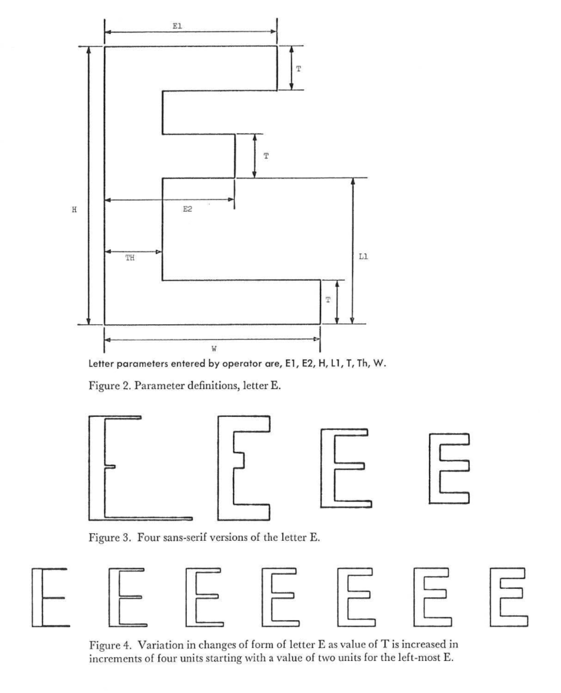 Abb. 1: ITSLF, Variationen von Buchstabe E 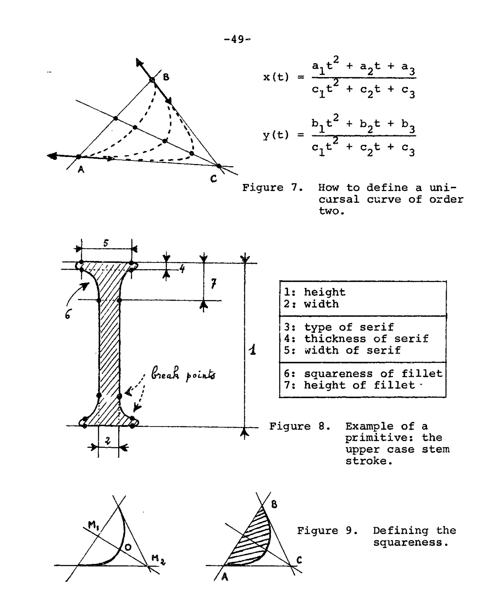 Abb. 2: CSD, Kegelschnitte für Kurven (Oben),Beispiel wie Parameter einen Buchstaben bilden (Mitte). 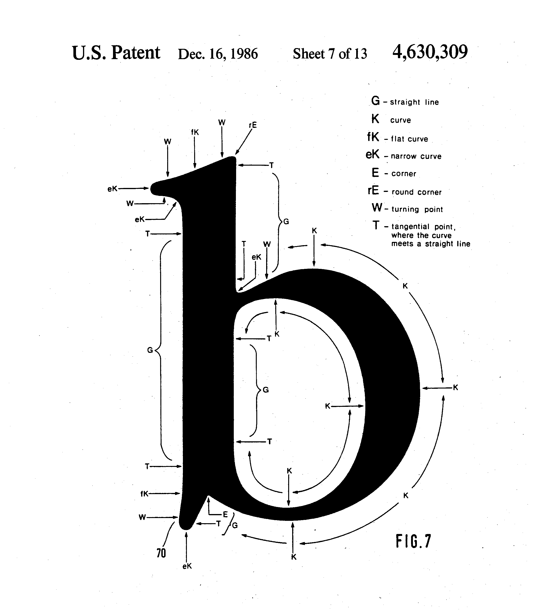 Abb. 3: Ikarus Patent Zeichnung
 Abb. 4: Metafont Funktion ab 1984
Abb. 4: Metafont Funktion ab 1984
Parallel entwickelten sich industrielle Systeme wie Ikarus von URW (1973)Abb. 3, das bestehende Schriftzeichnungen reproduzierte, digitalisierte und in mathematische Konturen, sogenannte Splines umwandelte, sowie die frühen Bitmap-basierten Systeme für CRT-Bildschirme und Fotobelichter, die Schrift als Pixelraster speicherten und an die niedrigen Auflösungen anpassten z. B. die Digiset-Schriften von Rudolf Hell.24 Es gab viele spannende Ansätze, und durch einen langsamen Prozess der Auswahl und Weiterentwicklung wurden einige verworfen, während sich andere zusammenfanden und zu Standards entwickelten. Am Ende dieses Prozesses konzentriert sich die gesamte Branche im Wesentlichen auf ein einziges System: OpenType, ein Standard, der von Microsoft gemeinsam mit Adobe Systems entwickelt wurde, als Ergebnis des sogenannten „Font Wars„ zwischen Apples TrueType und Adobes PostScript.25
Gleichzeitig existiert bis heute eine vergleichsweise kleine, aber stabile Nische, in der alternative Systeme genutzt werden. Dazu zählt das Textsatzsystem TeX mit seinem Ablegerprojekt LaTeX, sowie das dazugehörige Schriftsystem Metafont, das vor allem in wissenschaftlichen Kontexten, insbesondere in der Mathematik, Informatik und Physik Verwendung findet.26 MetafontAbb. 4 ist im zeitgenössischen Typedesign weitgehend unbekannt, bietet jedoch durch seinen parametrischen Ansatz wichtige Ausgangspunkt für aktuelle experimentelle Ansätze im Schriftentwurf sowie für die vorliegende Arbeit. Daher wird im folgenden Kapitel die Entstehungsgeschichte und Funktionsweise von Metafont beschrieben.
4.Metafont
Metafont sowie TeX entstanden tatsächlich aus einer tiefen Unzufriedenheit von Donald Knuth, dem Autor des bekannten mehrbändigen „The Art of Computer Programming“. Für den Mathematiker und Informatiker Donald Knuth war die visuelle Präzision seiner Texte ebenso wichtig wie deren Inhalt. Als frühere Bände noch auf mechanischen Bleisatzmaschinen gesetzt wurden, entsprach das Ergebnis seinen Ansprüchen. Dies änderte sich jedoch grundlegend, als neue Bände mit dem optischen Fotosatzsystemen gesetzt wurden, weil damals finanzielle Mittel fehlten um das teure Bleisatz-Verfahren weiter zu verwenden.27/27 Die neuen digitalen Schriften wirkten für Knuth minderwertig und beliebig. Typografie war für Knuth kein nebensächliches Mittel, sondern wichtiger Bestandteil seiner wissenschaftlichen Arbeiten.
So entschloss er sich im Sommer 1977, das Problem selber anzugehen. Er wusste nicht direkt wie er starten soll und das Konzept seiner Metafont kam erst nach dem gescheiterten Versuchen die Monotype Modern Schriften zu digitalisieren. Erst experimentierte Er mit Fernsehkameras, was aufgrund von Verzerrungen und Lichtempfindlichkeit scheiterte. Dann projizierte er Buchstaben groß an eine Wand und skizzierte die unscharfen Umrisse per Hand. Während dieser Skizzen kam ihm die zentrale Idee. Er wollte nicht einfach Formen kopieren, sondern die dahinterstehende gestalterische Absicht erfassen und in ein Computerprogramm bringen. Daraus entstand das Konzept von Metafont: Buchstaben als mathematische Konstruktionen mit variablen Parametern zu beschrieben.29
„It suddenly dawned on me that I should not simply try to copy the shapes. A human being had originally drawn them, so I really wanted to learn as much as possible about what was in that person’s mind at the time, and I wanted to incorporate that knowledge into a computer program.“30
Knuth begreift den Computer als eigenständiges Medium für die Erzeugung von Buchstaben durch parametrische Formeln, anstatt den Computer nur als Simulations Medium vorheriger Technologien zu nutzen:
„One of the first important things that I learned was that the computer deserves to be treated as a new medium. When we approach the problem of digital type design, we should not expect to do everything exactly as it was done before; we should rather expect that we can learn to guide a computer as people have traditionally learned to guide a brush or a chisel.“31
Aus dieser Erkenntnis entstanden die 3 P’s von Metafont: „drawing with pens and parameters via programs“.32 Die Grundfunktion von Metafont verfolgt einen kalligraphischen anstatt „zeichnerischem“ Ansatz. Man „zeichnet“ die Buchstaben nicht mehr als Umriss, sondern beschreibt, wie sie „geschrieben“ werden sollen. Ein paar Koordinaten-Punkte definieren die Skelettform eines Buchstaben, und ein virtueller Stift fährt diese Grundform ab. Verändert man die Beziehung der Koordinaten-Punkte oder die Stiftform, verändert dies automatisch jede Glyphe in dem System.33 Daher auch der Name einer Meta-Font, denn die gesamte Familie von Glyphen, verschiedene Schnitte, Stile usw. wird in einem einzigen Modell zusammenfasst.
Knuth veröffentlichte die erste Version von Metafont 1979, mit der Hilfe von bekannten Typographen wie Charles Bigelow, Matthew Carter, Kris Holmes, Richard Southall und Herman Zapf.34 Ziel war es, verschiedene Bitmap-Schriften zu erzeugen für verschiedene Größen und Stile durch parametrische Variation. Diese Idee der automatischen Variation kam aus der Beobachtung, dass im Bleisatz Buchstaben für jede Schriftgröße spezifisch angepasst wurden, etwa in Kontrast, Strichstärke oder x-Höhe. Knuth entnahm daraus, dass eine Schrift, die in ihrer eigenen inneren Logik formuliert ist, viel leichter für verschiedene Größen optimiert werden könnte und so höchste Qualität und gleichzeitig typografische Tradition bewahren würde.35 Diese erste Version war eine Art Prototyp und dadurch schwer zu bedienen, sie verfolgte einen naiven Ansatz, denn Variationen in der Stiftrotation sowie der Stiftbreite entlang des Skelett-Pfads waren damals noch nicht möglich. Darauf folgte 1984 eine überarbeitete Version von Metafont, welche diese Details berücksichtigte. Buchstaben, beziehungsweise einzelne Komponente können nun zusätzlich auch als Umrisse mit Bézier-Kurven gezeichnet werden. Ein Jahr später wurde die bekannteste Metafont-Schrift „Computer-Modern“ veröffentlicht. Diese Schrift verfügt insgesamt über 62 steuerbare Parameter, wodurch sie sich in vielen Feinheiten umformen lässt.36
„I realize now that I was extremely naive in 1977 when I believed that the edges would take care of themselves if I simply drew with a pen that had the right shape. On the other hand, we are not abandoning the pen metaphor, because it gives the correct „first-order“ insights about how letters are drawn; the edge details are important second-order corrections that refine the designs, but they should not distract us from the chief characteristics of the forms.“37
4.1 Warum Metafont scheiterte
Obwohl Metafont einen interessanten alternativen Ansatz bot, wurde es damals in der Schriftgestaltungsszene nicht besonders ernst genommen, was man auch anhand von Reaktionen zu „The Concept of a Meta-Font“ sehen kann:
„The concept of the Meta-Font attacks all the sensibilities of professionals who work with type.“ –Gary Gore
„The result is not pleasant to look at. Nor is it intended to please the eye.“ –Fernand Baudin
„The typefaces used by Donald Knuth are ugly and seem amateurishly rendered — at least they seem that way to me.“ –David Ford
„Besides being a designer, I have no objection to act as a systems operator, but I don’t want to become a programmer - even less a parameterizer.“ –Gerard Unger38
Die funktionsweise von Metafont und Software allgemein ist ziemlich abstrakt und logisch. Menschen die sich in Software vertiefen können, denken meist auch in abstrakter und logischer Weise, doch Design ist mehr emotional als logisch. Die klassische Outline Methode ist direkter und ermöglicht eine instinktivere Arbeitsweise. Die Arbeit mit dem Schriftsatzsystem TeX sowie Metafont involviert einen langen Prozess. Mehrere Programme mussten durchlaufen werden um eine Grafik zu erzeugen und diese anzuzeigen.39
„lnteraction with the system can be slow because the system is declarative rather than interactive, requiring the designer to first create the Metafont containing a mathematical specification of the letterforms, and then to run the Metafont system with the letterform program.“40
Hätte es damals so etwas wie ein graphisches user interface gegeben um Metafont code schneller zu visualisieren, wären manche Schriftgestalter*innen die intuitiv und reaktiv arbeiten weniger gehemmt gewesen, und Metafont hätte sich stärker verbreitet.
5. Parametrische Gestaltung Heute
Die Funktionsweise von Metafont war ihrer Zeit voraus und ist auch 40 Jahre später noch relevant, da sie die Grundlage für eine parametrische Gestaltung von Schrift liefert. Einige zeitgenössische Projekte greifen das Metafont-System direkt wieder auf und führen uns vor Augen, welches Potenzial in diesem Ansatz steckte, und regen damit zum Nachdenken über heutige Gestaltungswerkzeuge an. Beispiele hierfür sind „MTDBT2F4D“Abb. 5 von Dexter Sinister (2012),41 „“Abb. 6 von Alexis Reigel und Marco Müller (2012–2025),42 der „Plancton-Editor„ vom Luuse-Kollektiv (2022),43 sowie die „Metapost Sandbox" von Santhosh Thottingal (2025).44 Auch in diesem Projekt steckt der selbe Gedanke.
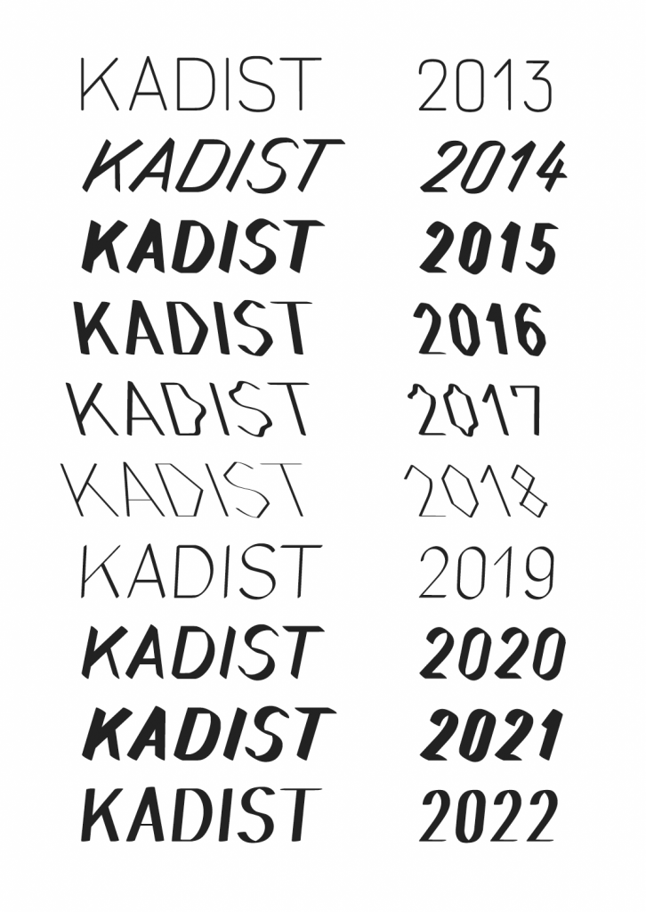 Abb. 5: KADIST logo 2013-2022 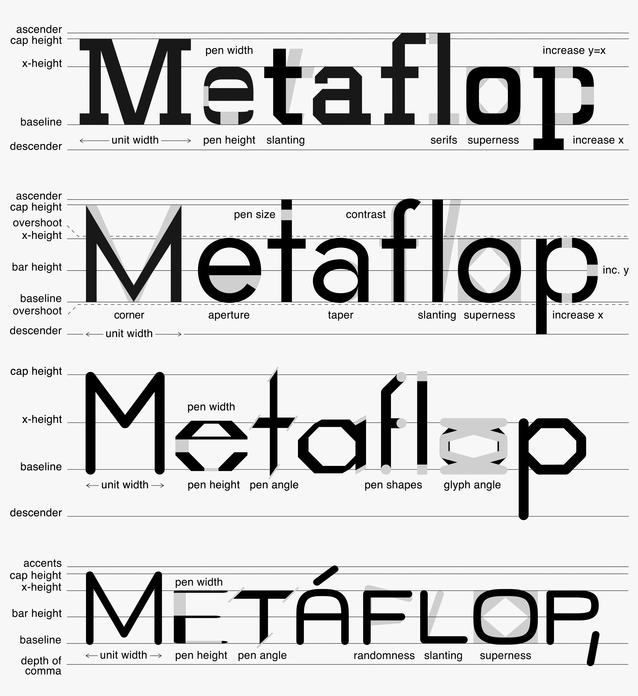 Abb. 6: Metaflop ModelleAndere Projekte mit skriptbasierten Schriften wie, „Calligrapher“ von Jürg Lehni und François Rappo (2006), „Type Generator“ von Remo Caminada und Ludovic Varone (2007), „Prototypo“ von Yannick Mathey (2009)45, „Letterspecies“ Abb. 7 von Fábio Pereira und Tiago Martins (2019)46, „LTTR/INK“ von Filip Paldia, Martin Cetkovsky und Matus Zdansky (2022)47 oder „Burrowlab“Abb. 8 von Phillip Koller (2022)48 folgen ähnlichen Ansätzen. Sie zeigen, wie Knuths Denkweise noch immer Impulse für neue, flexible und kreative Schriftgestaltung geben kann, wenn sie nur leichter zugänglich wäre. 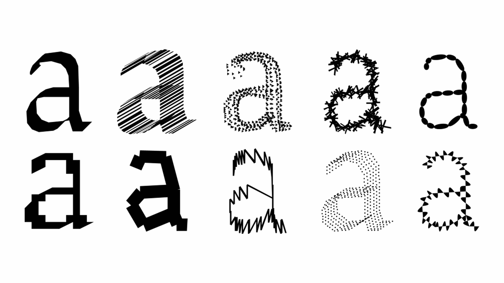 Abb. 7: Letterspecies 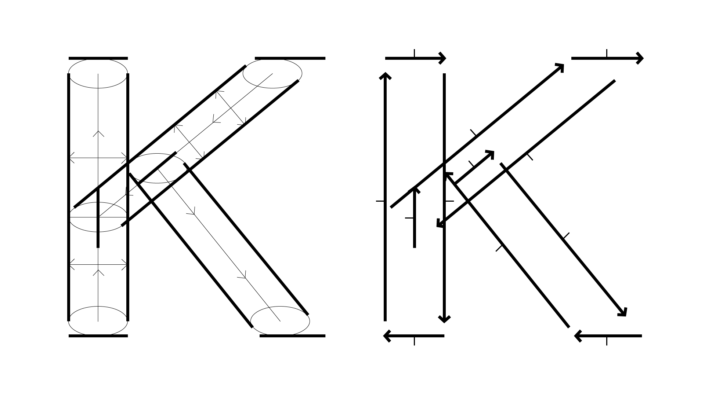 Abb. 8: Burrowlab
5.1 Zugang und Offenheit
Programmieren ist heute zum Glück zugänglicher denn je. Mit der Hilfe von künstlicher Intelligenz, lassen sich komplizierte Code-Strukturen auseinander nehmen und somit besser nachvollziehen. Dadurch erscheint die Lernkurve etwas flacher zu werden. Zusätzlich veröffentlichen viele Gestalter*innen und Unternehmen ihre entwickelten Tools und Schriften unter Open-Source-Lizenzen wie zum Beispiel der GNU GPL 3,49 die sicherstellt, dass Software frei geteilt und verändert werden darf. Dies Förderdert Gemeinschaft und Transparenz. Die verpflichtende Offenlegung des Quellcodes ermöglicht jungen Gestalter*innen die Zusammenarbeit und unterstützt letztendlich Innovation.
5.2 Überblick Open-Source-Kultur
Die Idee von Open Source stammt ursprünglich aus der Wissenschaft. Wissen sollte frei zugänglich sein, damit andere Wissenschaftler*innen darauf aufbauen können. Da die Informatik in wissenschaftlichen Laboren entstand, ist diese Denkweise auch in viele der ersten Computerprogramme eingeflossen. Dieses Prinzip bedeutet mehr Zugang statt Exklusivität.50 Werkzeuge, Methoden und Ergebnisse gehören nicht einer Person, sondern können gemeinsam genutzt und verbessert werden. Dadurch entsteht ein Raum, in dem Neues ausprobiert werden kann, ohne Hürden, durch teure Lizenzen oder geschlossene Systeme.
Mit dem Aufstieg großer Technologie-Unternehmen in den 80er Jahren änderte sich jedoch vieles. Firmen nutzten zwar offene Technologien als Grundlage, begannen aber gleichzeitig, ihre Produkte abzuschotten, um damit Geld zu verdienen. So wurde aus einer Gemeinschaftsidee ein Teil des kapitalistischen Marktes. Open-Source-Projekte existieren zwar weiterhin, und auch stärker als zuvor, doch sie bewegen sich heute mehr in einem Spannungsfeld zwischen gemeinschaftlichem Wissen und wirtschaftlichen Interessen.51
In der Schriftgestaltung ist ein Wandel zu beobachten. Frei verfügbare Schriften galten lange als technisch und gestalterisch minderwertig und fanden kaum Verwendung. Die Platform Velvetyne, entstand 2011 als Reaktion auf die stark traditionelle Schriftgestaltung. Ziel war es, freie Schriften als Experimentierfeld zu sehen und jungen Designer*innen eine Plattform zu bieten. Dabei wurden Fehler und Lücken nicht als Schwächen, sondern als Ausgangspunkte für kreative Entwicklungen und Inspiration gesehen. Die ersten Nutzer*innen von Velvetyne-Fonts, meist Studierende und Non-Profits, wurden von den unkonventionellen Formen und Konzepten angezogen. Jeder konnte Beiträge leisten, Schriften verbessern oder weiterentwickeln, wodurch ein dynamisches, offenes Netzwerk entstand.52
Im Vergleich zu Donald Knuths Zeit wirkt das heute anders. Als Knuth Metafont entwickelte, war Offenheit selbstverständlich, vor allem, weil digitale Schriftgestaltung noch ein wissenschaftliches Thema war und der Austausch im Mittelpunkt stand. Heute ist Offenheit keine Grundvoraussetzung mehr, sondern eine Entscheidung. Wer offene Werkzeuge nutzt, tut das nicht, weil es die einzige Möglichkeit ist, sondern weil es neue Freiheiten schafft. Teilen statt abschotten, ausprobieren statt perfektionieren, weiterentwickeln statt festhalten.
6. Eigene Experimente in Metapost
Was wird untersucht? :
Ziel des Experiments war es, parametrische Schriftgestaltung praktisch zu erfahren, und herauszufinden, welche
Potenziale ein altes, wenig genutztes System unter aktuellen Bedingungen bieten kann. Untersucht wurde, wie sich
Schriftformen verändern, wenn sie über Code und Parameter in der Metapost Sprache erzeugt werden und welche
gestalterischen Konsequenzen daraus entstehen. Es wurde ein Spannungsfeld zwischen mathematischer Genauigkeit und
optischer Richtigkeit erkundet sowie die Wirkung extremer Parameterwerte getestet.
Dabei wurde bewusst auf die klassische Outline-Methode verzichtet. Obwohl Typedesigner*innen seit langem Schrift als Flächen verstehen, eignet sich diese Denkweise nur beschränkt für parametrische und experimentelle Ansätze.53 Sie bietet zudem kaum Einsichten zur Entstehung von neuen Schriftformen, wie Donald Knuth bereits feststellte:
„Of course we could simply trace the outlines of the letters; but that would not be any fun, and it would not give us any insights.“54
6.1 Aufbau des Experiments
Warum Metapost? :
Metafont wurde von Donald Knuth unter einer Open-Source-Lizenz entwickelt. Dadurch war es John D. Hobby möglich,
das System weiterzuentwickeln und an eigene Anforderungen anzupassen. Aus dieser Weiterentwicklung entstand
Metapost, ein Programm zur Erzeugung von PostScript und SVG-Grafiken, ursprünglich für Abbildungen in technischen
Dokumenten gedacht.55
Metapost ist damit eine Abspaltung von Metafont und unterliegt ebenfalls einer Open-Source-Lizenz. Beide Systeme sind syntaktisch eng verwandt, unterscheiden sich jedoch im Ausgabeformat. Durch die Unterstützung des Vektorformats (SVG) anstelle von Bitmaps eignet sich Metapost besser für zeitgemäße digitale Anwendungen.
Auf Basis von Metapost entwickelte das Kollektiv LUUSE einen Open-Source-Font-Editor, der parametrische Schriftgestaltung visuell erfahrbar macht. Dieser Editor mit dem Namen „Plancton“.56 wurde von dem technischen Mitarbeiter Simon Thiefes an der HAW Hamburg weiterentwickelt, um ihn insbesondere für Studierende besser nutzbar zu machen57 Dies war der Auslöser, weshalb Ich im Sommer 2024 in einem Typedesign Kurs erstmals in den Kontakt mit parametrischer Schrift kam.
6.2 Dokumentation des Experiments
Um den Plancton-Editor nutzen zu können, musste zunächst eine lauffähige Arbeitsumgebung eingerichtet werden. Dabei waren die Open-Source-Dokumentationen des LUUSE-Kollektivs auf GitHub sowie die Überarbeitung des Editors von Simon Thiefes eine große Hilfe. Ohne diese Unterstützung wäre ein Zurechtkommen mit dem System von Anfang an nur erschwert möglich gewesen.
Die anschließende experimentelle Phase folgte keinem linearen Prozess, sondern war als offener Erkundungsraum gedacht. Zu Beginn stand das Verständnis der Metafont- bzw. Metapost-Sprache selbst im Vordergrund. Es existieren zwar umfangreiche Handbücher von Donald E. Knuth und John D. Hobby, die versuchen, jede Funktion des Programms zu erklären, für unerfahrene Gestalter*innen wirken diese durch ihre kompexität jedoch oft abschreckend. Im Metafont Book sind besonders komplexe Stellen mit sogenannten „dangerous bend“-Symbolen markiert, als Hinweis darauf, dass vollständiges Verständnis nicht immer vorgesehen ist.58 Zusätzlich fehlen in den online verfügbaren PDF-Versionen die begleitenden Abbildungen, die für das visuelle Verständnis vieler Funktionen entscheidend wären. Durch begrenzte Ressourcen und fehlende Programmierkentnisse wurde die Orientierung in dieser neuen Arbeitsumgebung zu einem der zeitintensivsten Schritte der gesamten Arbeit.
Nachdem grundlegende Befehle erlernt wurden, konnten einfache Parameter wie Strichstärke, Strichkontrast oder Stiftrotation als Ausgangspunkt genutzt werden, um grundlegende Zusammenhänge zwischen Code und Form zu verstehen. Weitere Einsichten entstanden durch die Analyse und Modifikation frei zugänglicher Metapost und Metafont-Schriften wie zum Beispiel der „meta-old-french“ von LUUSE (2018).59 oder der „DOF“ von Paul Bernhard (2018)60
Der Fokus verlagerte sich dadurch langsam von einzelnen Buchstaben hin zu wiederverwendbaren Strukturen. Sogennante Makros ermöglichen es, komplexe Komponente wie Serifen oder Superelliptische Bögen einmal zu definieren und in der gesamten Schrift mehrfach anzuwenden. Dadurch wird der Code einzelner Glyphen deutlich kompakter, und die Schrift lässt sich zunehmend als zusammenhängendes System begreifen.
Erst auf dieser Grundlage entstand eine Metapost-Version der Stempel-Garamond. Die Wahl fiel auf dieses klassische Old-Style-Serifenmodell, da es heutzutage zahlreiche digitale Varianten der Garamond gibt. Diese basieren jedoch fast ausschließlich auf der Outline-Methode und zeichnen die Formen im Wesentlichen nach. Einen parametrischen Ansatz oder Raum für Experimente gibt es dort kaum. Die Garamond gilt außerdem als besonders gut lesbar und ist stark von einer humanistischen Ästhetik geprägt. Diese Qualitäten lassen sich nicht so leicht in ein streng mathematisches System übertragen. Genau darin lag der Reiz. Optische Anpassungen und Experimente zur Lesbarkeit wurden dadurch zu einem wichtigen Teil der Versuche. Einige dieser Fragen zur Lesbarkeit tauchen auch in einem Leserbrief des Typografs Albert Kapr an Donald Knuth auf, als Reaktion zu „The Concept of a Meta-Font“.
„1. By what percentage of over-all height does the optical center stand above the geometric center?“
„2. By what percentage should the diameter of a circle be larger than the depth of a square so that both appear to be optically of equal height?“
„4. Should the stroke width of small caps be equal to that of lower-case letters or slightly thinner?“
„6. What is the thinnest possible stroke width of a newspaper text face?“61
Solche Fragen lassen sich mit Metafont auf praktische Weise beantworten, indem man Parameter schrittweise neu definiert oder anpasst. Dabei kann man direkt beobachten, wie sich jede Anpassung auf das gesamte Schriftbild auswirkt. Diese experimentelle Herangehensweise besitzt einen besonderen Reiz, den auch Donald Knuth im Metafont Book beschreibt:
„Moreover, the shapes can be defined in terms of variable parameters; computers can „draw“ new fonts of characters in seconds, making it possible for designers to perform valuable experiments that were previously unthinkable.“62
Einige dieser Garamond-Meta-Variationen sind im folgenden Bereich abgebildet, diese können über die Thesis-Website getestet, skaliert und installiert werden:
Garamond-Meta-Base
DownloadGaramond-Meta-Reverse
DownloadGaramond-Meta-Round
DownloadGaramond-Meta-Modern
DownloadGaramond-Meta-Polygon
DownloadGaramond-Meta-Low
DownloadGaramond-Meta-xHight
DownloadGaramond-Meta-Poly-Bold
DownloadNeben den bewussten Anpassungen und Experimenten spielten auch Zufallswerte eine Rolle. So entstanden unerwartete Ergebnisse durch Logikfehler, verdrehte mathematische Zeichen oder sonstige Glitches.Abb. 9 Diese Fehler werden nicht nur als Störung verstanden, sondern als Teil des gestalterischen Prozesses in Metafont. Um den Charakter von Metafont besser zu vermitteln, zeigt Donald Knuth seine „Metaflops"Abb. 10, Ergebnisse die durch Zufälle entstanden sind. Er stellte dabei fest:
„In fact, the computer is full of surprises, and this is where a lot of the fun comes in.“63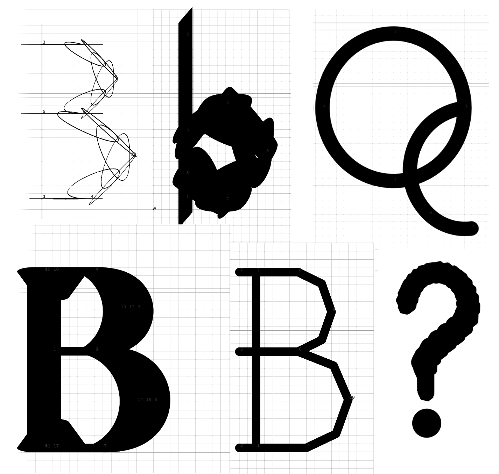 Abb. 9: Eigene Metaflops 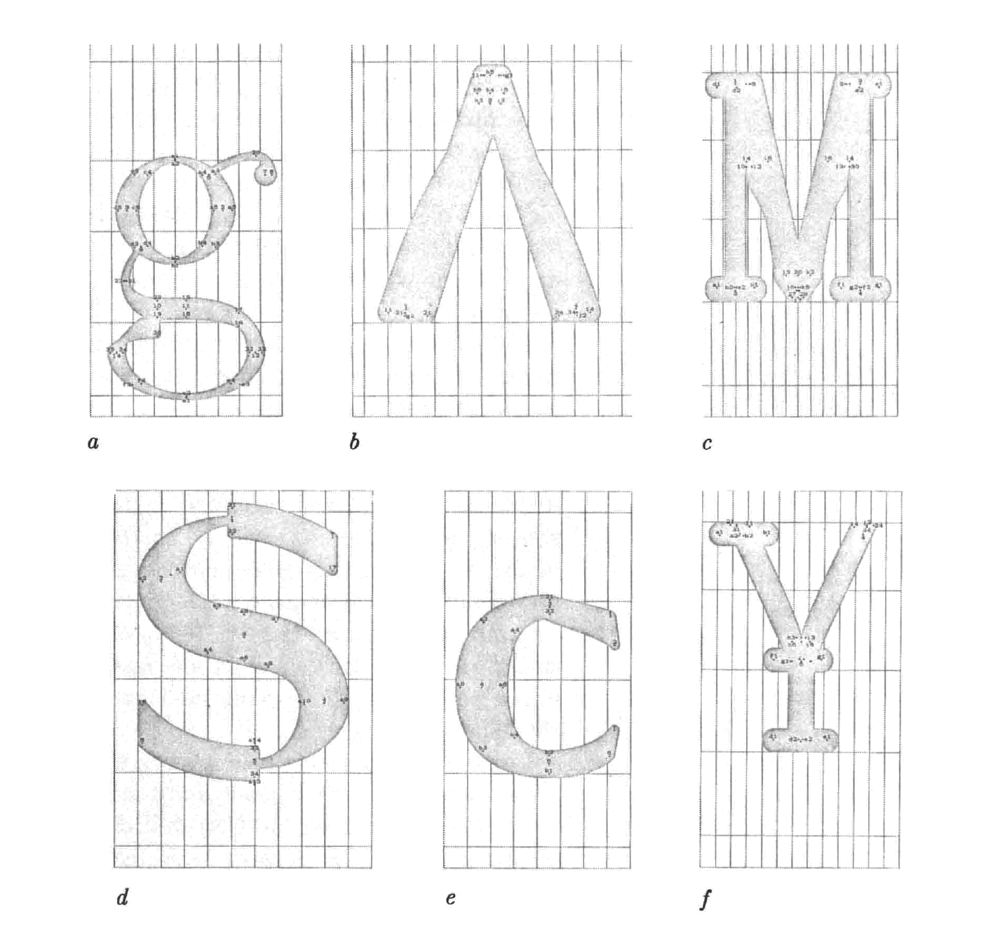 Abb. 10: Knuths Metaflops
Parallel dazu wurden die gestalterischen Grenzen von Metapost erkundet. Dafür wurden verschiedene Effekte aus Handbüchern und offenen Beispielsammlungen entnommen, neu kombiniert und als Makros definiert. Auf diese Weise ließen sich die Effekte konsistent auf alle Glyphen anwenden, es entstanden neue experimentelle Zeichenmethoden, aus denen unerwartete Buchstabenformen hervorgingen. Einige der daraus resultierenden Ergebnisse wurden als Überschriften der Kapitel abgebildet.
Der Plancton-Editor funktioniert nicht immer wie erhofft. So kam es immer wieder zu unerwarteten Errors, die einen zunächst planlos zurückließen. Vor allem in der Anfangsphase führte dies häufig zu starker Frustration und dazu, dass die gesamte Schriftdatei von Grund auf neu aufgebaut werden musste. Mit der Zeit lernte man jedoch, besser mit solchen Fehlern umzugehen. Leider stellte sich erst gegen Ende heraus, dass sich eine variable Schrift mit Metapost nicht so einfach erzeugen lässt wie zunächst angenommen. In diesem Fall standen „Fehler“, also automatisch generierte Artefakte im Weg. Denn die Konvertierung der Stiftformen in Outlines durch Metapost erzeugt stark fragmentierte Pfade, wodurch die ganze Schriftdatei unübersichtlich wird und eine nachträgliche Bearbeitung für variable und wirklich saubere Schriften notwendig wird.64 Da diese Nachbearbeitung jedoch sehr zeitintensiv wäre, wurde der Fokus von der Erzeugung von TrueType-Fonts, auf eine praktische Anwendung des Metapost System in neuen, und dynamischen Umfeld verschoben, genauer gesagt auf die Weiterentwicklung eines Web-Tools.
6.3 Anwendungen im Web Tool
Die in den Metapost-Experimenten gewonnenen Erkenntnisse flossen in die Weiterentwicklung des webbasierten Poster-Tools des LUUSE-Kollektivs ein. Das „Maxima-Programme„-Tool65Abb. 11 ermöglicht es Bewohner*innen von Maxima, Veranstaltungen in eine Online-Tabelle einzutragen. Durch CSS wird die Tabelle ausgelesen, daraus entsteht ein automatisches Layout der Veranstaltungen. Die Schrift und das Layout passen sich bei jedem neuen Eintrag automatisch an die jeweilige Inhaltsmenge und den verfügbaren Raum an. Der Output ist ein flexibles Poster Layout im Format A3. All das wird ermöglicht durch Python-Skripte und den Einsatz von Metapost. Das Tool zeigt, dass Metapost-Schriften auf dynamische Umgebungen reagieren können, etwa durch die automatische Skalierung von Höhe und Breite.
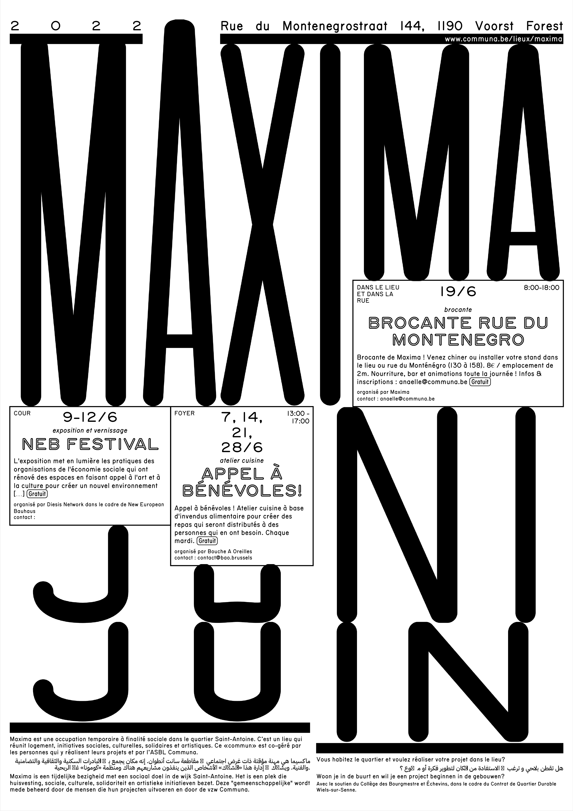 Abb. 11: Maxima-Programme-Tool Output 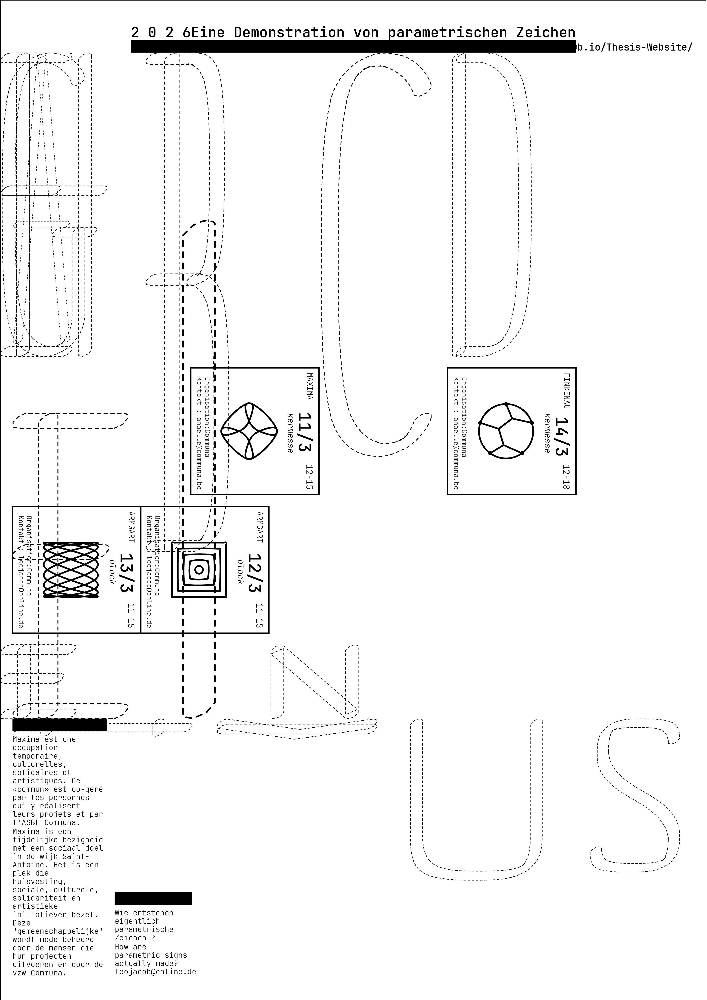 Abb. 12: Eigener EntwicklungszwischenstandKonzept:
Ziel war es, dieses Tool für die eigenen Fragestellung weiterzudenken und so die Funktionsweise parametrischer
Schrift sichtbar zu machen. Die Schrift wird hier als veränderbares System erlebt. Parameter lassen sich quasi in
Echtzeit anpassen und erzeugen unterschiedlichste Varianten aus der selben Grundstruktur. Auf diese Weise wird das
Metafont-Prinzip unmittelbar erfahrbar.
Umsetzung:
Zu Beginn stellte sich das Verständnis der Funktionsweise des Tools als Herausforderung dar, da die Dokumentation
auf GitHub nur sehr knapp gehalten war. Erst durch eine E-Mail an das LUUSE-Kollektiv und eine ausführliche
Rückmeldung von Thomas Bris, einem ehemaligen Praktikanten des Kollektivs, konnten offene Fragen geklärt und die
Arbeitsumgebung
lauffähig gemacht werden. Im nächsten Schritt wurde die entwickelte Garamond-Meta syntaktisch angepasst, um in
dieser neuen Umgebung korrekt aufgerufen zu werden. Dafür war erneut etwas Zeit nötig, um sich in der Struktur des
Codes zurechtzufinden. Um das Verhalten der Schrift überschaubar zu testen, wurden zuerst die Versalien
integriert, da sie eine einheitliche Höhe besitzen.
Nach der erfolgreichen Einbindung folgten schrittweise weitere Anpassungen des Tools, unterstützt durch Googles
KI-Modell „Antigravity", mit dem sich komplexe Code-Strukturen analysieren und auch neu erstellen lassen. Auch
hier entstanden im Prozess immer wieder überraschende Ergebnisse durch Fehler im CodeAbb. 12. Zunächst wurden die hartkodierten Inhalte, also Titel und Monatsnamen,
durch einen flexiblen Texteingabe-Mechanismus
ersetzt. Dadurch entstand ein einfaches grafisches User-Interface (GUI).
Das Layout reagiert nun dynamischer auf den Inhalt. Überschriften können länger werden und die Spalten passen sich automatisch an die neue Textlänge an. Zusätzlich können anstelle von Text nun auch grafische Elemente (SVG) direkt in die Spalten geladen werden. Die Auswahl dieser Grafiken fiel in diesem Fall auf kleine Metapost-Zeichnungen, die größtenteils der umfangreichen Sammlung „Metapost-examples“ von Toby Thurston auf GitHub entnommen wurden.66 Diese stehen unter der GNU GPL v3-Lizenz und wurden für meinen Zweck leicht angepasst. Alle Grafiken wurden auf die gleiche Größe gebracht und über einen gemeinsamen Parameter verknüpft, sodass sie schnell und konsistent verändert werden können. Die kleinen Zeichnungen verweisen dabei indirekt auf Metapost, das System, das für technische Abbildungen entwickelt wurde aber ebenso zur Formerzeugung von Schrift genutzt werden kann.
Als letztes wurden die wichtigsten Parameter der Garamond-Meta über das GUI in das Frontend integriert. So kann die Schrift schnell verändert werden, ohne das Web-Tool zu verlassen. Nutzer*innen können verschiedenen Funktionen der Parameter erkunden indem sie Zahlenwerte verändern, ohne sich mit komplexem Code auseinandersetzen zu müssen. Die Parameter werden in Gruppen zusammengefasst und anstelle der Events direkt in die Spalten des Posters geladen. Dadurch lässt sich auch noch nach dem Druck nachvollziehen, welche Parameter für die abgebildete Schriftfamilie verwendet wurden.
Im Verlauf des Projekts wurde das Poster-Tool schrittweise so weiterentwickelt, dass sich die erzeugten Ergebnisse auch für ein Type-Specimen nutzen lassen. Auf diese Weise entstand schließlich das physische Objekt der Arbeit: das Garamond-Meta-Specimen. Die A3-Seiten werden direkt aus dem Web-Tool generiert, gedruckt, überdruckt und anschließend mittig gefaltet. Ein ausgewählter Teil der möglichen Schriftvarianten ist in sechs Kapitel beziehungsweise Parameterruppen gegliedert. Farbliche Überlagerungen im Risodruck unterstützen die Darstellung der Variabilität und machen sichtbar, wie unterschiedliche Formen aus derselben zugrunde liegenden Struktur hervorgehen.
Das Web-Tool zeigt, dass parametrische Schriftgestaltung ihr Potenzial besonders in dynamischen Anwendungen entfaltet, etwa in Posterreihen oder automatisierten Layoutsystemen, bei denen Inhalte und Formate variieren. Der zeitliche Aufwand verlagert sich dabei vom einzelnen Design hin zur Entwicklung des Systems selbst. Wie der Grafikdesigner Dimitri Jeannottat im Zusammenhang mit generativen Gestaltungssystemen beschreibt, verändert sich dabei vor allem der zeitliche Fokus des Entwerfens. Statt jedes einzelne Plakat manuell auszuarbeiten, wird mehr Zeit davor in die Entwicklung des Systems investiert, das anschließend eine Vielzahl an Varianten in kürze hervorbringen kann.67
6.4 Thesis-Website
Diese gedruckte Form der Bachelor-Tesis entstand, auch wie das Garamond-Meta-Specimen, im Web-to-Print Verfahren. Herkömmliche Produktionswerkzeuge wie InDesign wurden also auch hier vermieden, denn die Verwendung von HTML bietet andere Möglichkeiten. Die Website soll einen weiten Zugang zu dem Thema ermöglichen, ganz im Sinne des Open-Source-Gedanken. Die genutzten Quellen sind verlinkt und können einfach abgerufen werden. Zusätzlich können einige Varianten der Garamond-Meta getestet und kostenlos als TTF-Datei heruntergeladen werden. Diese Website verwendet die frei zugängliche „LATEX.CSS-Libary“ von Vincent Dörig.68 Die Library lässt die Website wie ein wissenschaftliches LATEX-Dokument aussehen. Diese Gestaltung wurde bewusst gewählt, denn sie verweist, über die „Computer-Modern“ -Schrift auf die typografische Arbeit von Donald Knuth und würdigt seine lange Arbeit an den Systemen. Ein schönes Detail in der ganzen Geschichte von Metafont ist, dass nachdem Knuth 1984 Metafont und TeX überarbeitet hatte, die Systeme schließlich eine typografische Qualität erreichten, die auch im Bildungswesen anerkannt wurde. In der Folge begann die American Mathematical Society (AMS), Autor*innen dazu zu ermutigen, ihre schriftlichen Arbeiten für „Transactions of the American Mathematical Society“ in TeX-Form einzureichen, ausgerechnet für ein Journal, dessen gestalterische Qualität Knuth zehn Jahre zuvor noch öffentlich kritisiert hatte.69
7. Analyse der Experimente
Die Experimente haben gezeigt, dass der parametrische Ansatz einen grundlegend anderen Zugang zum Entwerfen von Schrift bietet. Anstelle einzelner Formen rückt das zugrunde liegende System in den Fokus. Parameter, Regeln und Beziehungen bestimmen das Erscheinungsbild der gesamten Schriftfamilie. Ein großes Potenzial dieses Ansatzes liegt in seiner Variabilität. Schrift entsteht nicht als festgelegtes Objekt, sondern als offenes System, das auf unterschiedliche Bedingungen reagieren kann. Besonders deutlich wird dieses Potenzial in dynamischen Anwendungen, etwa in automatisierten Layoutsystemen oder webbasierten Formaten, in denen sich Schrift flexibel an Inhalt und Kontext anpasst. Auch für zukünftige gestalterische Anwendungen könnte dieser Aspekt relevant bleiben. Zwar werden durch Metafont strukturelle Zusammenhänge explizit formuliert, jedoch bedeutet dies nicht, dass der gestalterische Entwurfsprozess selbst abgebildet wird. Wie Gerry Leonidas in „In search of the digital Cresci“ betont, ist das Ergebnis des Meta-Designs
„[...] nothing more than the final trace of the process, not in any way a representation of the design process itself“. 70Die für das Verständnis erforderliche Programmiersprache stellt in der Praxis eine Hürde dar, da sie für viele Designer*innen wie eine Fremdsprache wirkt und so den Zugang zu parametrischen Systemen erschwert.71 Die praktische Arbeit bestätigt damit auch bekannte Kritikpunkte. Parametrische Systeme erfordern ein abstrakteres Denken, der Einstieg ist zeitintensiv und deutlich weniger intuitiv als das direkte Zeichnen von Konturen. Diese Hürden bestehen weiterhin. Allerdings zeigt sich, dass moderne Werkzeuge wie zum Beispiel K.I., visuelle Editoren und offene Systeme dazu beitragen können, diese Distanz zu verringern und parametrische Ansätze zugänglicher zu machen. Eine entscheidende Rolle spielt dabei die Open-Source-Kultur. Open-Source-Tools und frei zugänglicher Code ermöglichen nicht nur einen niedrigeren Zugang, sondern fördern auch kollektives Lernen und eine experimentelle Haltung jenseits etablierter Standards.
8. Schluss
Diese Arbeit zeigt, dass parametrische Schriftgestaltung weniger eine alternative Technik, sondern vielmehr eine veränderte Haltung zum Entwerfen darstellt. Schrift wird nicht gezeichnet, sondern beschrieben und geschrieben, nicht als abgeschlossenes Objekt, sondern als offenes und frei zugängliches System gedacht. Die Experimente mit Metapost verdeutlichen, dass das Arbeiten mit Regeln, Parametern und auch Fehlern zwar eine Herausforderung ist, aber auch neue gestalterische Spielräume eröffnet und unerwartete Ideen hervorbringt. Klassische Entwurfsmethoden werden dadurch nicht ersetzt, sondern sinnvoll ergänzt. Besonders im Zusammenspiel mit Open-Source-Tools und in dynamischen Anwendungen zeigt sich das Potenzial parametrischer Zeichen als zeitgemäßer Zugang zur Schriftgestaltung. Die Arbeit versteht sich nicht als Vergleich verschiedener Schriftsysteme, sondern als Ausgangspunkt für weiteres Denken jenseits etablierter Normen und als Einladung zum Experimentieren und zum offenen Teilen eigener Prozesse, um kollektives Lernen unter Gestalter*innen zu ermöglichen, ganz nach wissenschaftlichen Open-Source-Prinzipien.
Erklärung
Hiermit erkläre ich, dass ich die vorliegende Arbeit selbständig und ohne Benutzung anderer
als der angegebenen Hilfsmittel angefertigt habe. Wörtlich oder dem Sinn nach aus anderen
Werken entnommene Gedanken habe ich unter Angabe der Quelle kenntlich gemacht. Dies
gilt auch für bildliche Darstellungen sowie für Quellen aus dem Internet.
Mit einer Einsichtnahme und Ausleihe in der Bibliothek der HAW Hamburg (Department
Design) bin ich einverstanden/nicht einverstanden.
........................................
Ort, Datum Unterschrift
Fußnoten
- Kai Bernau, Beyond Bézier: The Stroke (2024). min. 05:35 ↩
- Vgl. Jürg Lehni, Peter Bilak, François Rappo, Pierre Keller, and Ecole cantonale d'art de Lausanne. "Typeface As Program." Lausanne, Switzerland: ECAL/University of art and design. (Lausanne 2010) , S. 81 ff. ↩
- Ebd., Vgl. S. 81 ff. ↩
- Ebd., Vgl. S. 81 ff. ↩
- Ebd., S. 81 ff. ↩
- Ebd., S. 81 ff. ↩
- Ebd., S. 81 ff. ↩
- Kai Bernau, Beyond Bézier: The Stroke (2024). ↩
- Karl Gerstner, Programme Entwerfen, digitale Edition, hrg. von Harald Geisler (2022; Originalausgabe 1963), S. 18. ↩
- Ebd., Vgl. S. 13. ↩
- Ebd., S. 13. ↩
- Demian Conrad and Silvio Lorusso, Graphic Design in the Post-Digital Age: A Survey of Practices Fuelled by Creative Coding (2021), S. 264. ↩
- Ebd., S. 83. ↩
- Ebd., Vgl. S. 287. ↩
- Ebd., S. 292. ↩
- Ebd., S. 72. ↩
- Roland Früh, Beyond Bézier: Introduction (2024). ↩
- Roland Früh, Beyond Bézier: Introduction (2024). ↩
- Vgl. Jürg Lehni, "Typeface As Program," S. 81 ff. ↩
- Ferdinand Ulrich, "Automatic Type Design 3, Talk: Digital type from the day before yesterday and tomorrow." ANRT, 2023. ↩
- Vgl. Lynn L. Ruggles, "Letterform Design Systems," Technical Report CS-TR-83-971 (Stanford University, 1983), S. 6-7. ↩
- Vgl. Jacques André, "Prehistory of Digital Fonts," TUGboat 44, Nr. 1 (2023), S. 38. ↩
- Ebd., Vgl. S. 38. ↩
- Ebd., Vgl. S. 40. ↩
- Vgl. Jürg Lehni, "Typeface As Program," S. 81 ff. ↩
- Ebd. Vgl. S. 81 ff. ↩
- Vgl. Donald E. Knuth, "Mathematical Typography," Bulletin of the American Mathematical Society 1, Nr. 2 (1979), S. 343. ↩
- Vgl. Jürg Lehni, "Typeface As Program," S. 81 ff. ↩
- Vgl. Donald E. Knuth, "Lessons Learned from Metafont," Visible Language 19, Nr. 1 (1985), S. 39. ↩
- Ebd., S. 39. ↩
- Ebd., S. 42. ↩
- Ebd., S. 39. ↩
- Ebd., Vgl. S. 38. ↩
- Vgl. Jürg Lehni, "Typeface As Program," S. 81 ff. ↩
- Vgl. Jacques André, "Prehistory of Digital Fonts," S. 42-43. ↩
- Donald E. Knuth, Computers and Typesetting, Volume E: Computer Modern Typefaces (1986), S. 1. ↩
- Donald E. Knuth, "Lessons Learned from Metafont," S. 47. ↩
- Vgl. Reactions to “The Concept of a Meta-Font” https://shreevatsa.net/tex/metafont/concept ↩
- Vgl. Dave Crossland, "Why Didn't Metafont Catch On," S. 419. ↩
- Lynn L. Ruggles, "Letterform Design Systems," S. 16. ↩
- Dexter Sinister, "A Note on the Type." https://readings.design/PDF/A-Note-on-the-Type-dexter-sinister.pdf ↩
- Alexis Reigel, Marco Müller, "Metaflop Modulator." https://www.metaflop.com ↩
- LUUSE, "Plancton Repository," https://gitlab.com/Luuse/plancton ↩
- Santhosh Thottingal, "Metapost Sandbox." https://mpost.thottingal.in ↩
- Vgl. Jürg Lehni, "Typeface As Program," S. 81 ff. ↩
- Fábio Pereira, Tiago Martins , "Letter Species" https://www.letterspecies.com ↩
- Filip Paldia, Martin Cetkovsky, Matus Zdansky, "LTTR/INK." https://www.lttrink.com ↩
- Phillip Koller, "Burrow Lab." https://www.burrowlab.com ↩
- Free Software Foundation, "GNU General Public License, Version 3." https://www.gnu.org/licenses/gpl-3.0.de.html ↩
- Vgl. Velvetyne Type Foundry, TYPEONE #10, S. 87. ↩
- Vgl. Velvetyne Type Foundry, TYPEONE #10, S. 88-89. ↩
- Vgl. Velvetyne Type Foundry, TYPEONE #10, S. 89-90. ↩
- Vgl. Jacques André, "Prehistory of Digital Fonts," S. 47. ↩
- Donald E. Knuth, "Lessons Learned from Metafont," S. 47. ↩
- Vgl. John D. Hobby, METAPOST: A User's Manual (2022), S. 1-2. ↩
- LUUSE, "Plancton Editor," https://gitlab.com/Luuse/plancton ↩
- HAW Type Design, "Plancton Editor," https://github.com/haw-type-design/plancton-editor ↩
- Vgl. Donald E. Knuth, Computers and Typesetting, Volume C: The METAFONTbook (Reading, MA: Addison-Wesley, 1986), S. 8. ↩
- LUUSE, "Meta Old French," https://gitlab.com/Luuse/foundry/meta-old-french ↩
- Bernhard Paul, "DOF," https://gitlab.com/swrs/dof ↩
- Vgl. Reactions to “The Concept of a Meta-Font” https://shreevatsa.net/tex/metafont/concept#kapr ↩
- Donald E. Knuth, The METAFONTbook, S. 6. ↩
- Donald E. Knuth, "Lessons Learned from Metafont," S. 44. ↩
- Vgl. Karel Píška, "Creating Type 1 Fonts from METAFONT Sources: Comparison of Tools, Techniques and Results" (Institute of Physics, Academy of Sciences, Tschechische Republik, 2004), S. 61. ↩
- LUUSE, "Maxima: Programme-Tool," https://www.luuse.io/projects/maxima/ ↩
- Toby Thurston, "Metapost Examples," https://github.com/thruston/metapost-examples?tab=GPL-3.0-1-ov-file ↩
- Vgl. Dimitri Jeannottat, Graphic Design in the Post-Digital Age, S. 211. ↩
- Vincent Dörig, "LaTeX.CSS" https://latex.vercel.app ↩
- Vgl. Jürg Lehni, "Typeface As Program," S. 81 ff. ↩
- Gerry Leonidas, "In Search of the Digital Cresci: Some Thoughts on Don Knuth's 'Digital Typography'," Information Design Journal 9, Nr. 2 & 3 (2000), S. 111 ff. ↩
- Vgl. Jacques André, "Prehistory of Digital Fonts," S. 45. ↩
Literaturverzeichnis
- 1. André, Jacques. "Prehistory of Digital Fonts." TUGboat Volume 44, no. 1. 2023. https://www.tug.org/TUGboat/tb44-1/tb136andre-prehistory.pdf
- 2. Bernau, Kai. Beyond Bézier. 2024. https://beyondbezier.ch
- 3. Conrad, Demian, and Silvio Lorusso. Graphic Design in the Post-Digital Age: A Survey of Practices Fuelled by Creative Coding. 2021. https://postdigitalgraphicdesign.com/
- 4. Coueignoux, Philippe. Generation of Roman Printed Fonts. PhD diss., Massachusetts Institute of Technology, 1975. https://dspace.mit.edu/bitstream/handle/1721.1/27408/02149218-MIT.pdf
- 5. Früh, Roland. Beyond Bézier: Introduction. 2024. https://beyondbezier.ch
- 6. Gerstner, Karl. Programme Entwerfen. Digitale Edition, hrg. von Harald Geisler. 2022 (Orig. pub. 1963). https://haraldgeisler.com/2020/06/27/programme-entwerfen-karl-gerstner/
- 7. Haralambous, Yannis. Fonts & Encodings. Sebastopol, CA: O'Reilly Media. 2007.
- 8. Hobby, John D. METAPOST: A User's Manual. 2022. https://www.tug.org/docs/metapost/mpman.pdf
- 9. Karow, Peter. "Data Structure for Character Storage and Retrieval." US-Patent 4,630,309. Issued December 16, 1986. https://patentimages.storage.googleapis.com/38/3e/b7/494a84a0c89633/US4630309.pdf
- 10. Knuth, Donald E. "Mathematical Typography." Bulletin of the American Mathematical Society Volume 1, no. 2. 1979: 337–372.
- 11. Knuth, Donald E. "Lessons Learned from Metafont." Visible Language 19, no. 1. 1985: 35–53.
- 12. Knuth, Donald E. Computers and Typesetting, Volume C: The METAFONTbook. Reading, MA: Addison-Wesley, 1986.
- 13. Knuth, Donald E. Computers and Typesetting, Volume E: Computer Modern Typefaces. Reading, MA: Addison-Wesley, 1986.
- 14. Lehni, Jürg, Peter Bilak, François Rappo, Pierre Keller, and Ecole cantonale d'art de Lausanne. "Typeface As Program." Lausanne, Switzerland: ECAL/University of art and design. 2010.
- 15. Leonidas, Gerry. "In Search of the Digital Cresci: Some Thoughts on Don Knuth's 'Digital Typography'." Information Design Journal 9, no. 2 & 3. 2000. https://leonidas.net/2012/03/28/digital-cresci/
- 16. Mergler, H. W., and J. R. Vargo. "One Approach to Computer Assisted Letter Design." In Proceedings of the 1968 23rd ACM National Conference, 305–19. New York: ACM, 1968. https://journals.uc.edu/index.php/vl/article/view/5032/3896.
- 17. Píška, Karel. "Creating Type 1 Fonts from METAFONT Sources: Comparison of Tools, Techniques and Results." Institute of Physics, Academy of Sciences, Tschechische Republik, 2004.
- 18. Ruggles, Lynn L. "Letterform Design Systems." Technical Report CS-TR-83-971. Stanford University, 1983. http://i.stanford.edu/pub/cstr/reports/cs/tr/83/971/CS-TR-83-971.pdf
- 19. Ulrich, Ferdinand. "Automatic Type Design 3, Talk: Digital type from the day before yesterday and tomorrow." ANRT, 2023. https://vimeo.com/1059452704
- 20. Velvetyne Type Foundry. "Open source (fonts) and the market economy: subversion/absorption?" TYPEONE #10. 2025.
Abbildungsverzeichnis
- Abb. 1: Mergler und Vargo: One Approach to Computer Assisted Letter Design. 1968. S. 306 https://journals.uc.edu/index.php/vl/article/view/5032/3896 (Abgerufen am: 16.01.26)
- Abb. 2: Coueignoux Philippe: Generation of Roman Printed Fonts, Massachusetts, 1975. S. 49 https://dspace.mit.edu/bitstream/handle/1721.1/27408/02149218-MIT.pdf (Abgerufen am: 16.01.26)
- Abb. 3: Karow Peter: Patent Nummer 4630309, Zeichnung Blatt 7. https://patents.google.com/patent/US4630309A/en?q=(Ikarus+URW)&oq=Ikarus+URW (Abgerufen am: 16.01.26)
- Abb. 4: Haralambous Yannis, Metafont Grafik, Fonts & Encodings, O'Reilly, 2007. https://vimeo.com/1059696617?fl=pl&fe=sh#t=21m28s (Abgerufen am: 16.01.26)
- Abb. 5: https://kadist.org/program/dexter-sinister/ (Abgerufen am: 16.01.26)
- Abb. 6: https://www.metaflop.com/modulator (Abgerufen am: 16.01.26)
- Abb. 7: https://cdv.dei.uc.pt/projects/letterspecies (Abgerufen am: 16.01.26)
- Abb. 8: https://www.burrowlab.com/learn (Abgerufen am: 16.01.26)
- Abb. 9: Eigene Abbildung
- Abb. 10: Knuth Donald: Lessons learned from Metafont. Visible Language, XIX 1, Stanford 1985. S. 45, Fig. 13
- Abb. 11: LUUSE: Maxima-Programme-Tool, 2024. https://www.luuse.io/projects/maxima/ (Abgerufen am: 16.01.26)
- Abb. 12: Eigene Abbildung